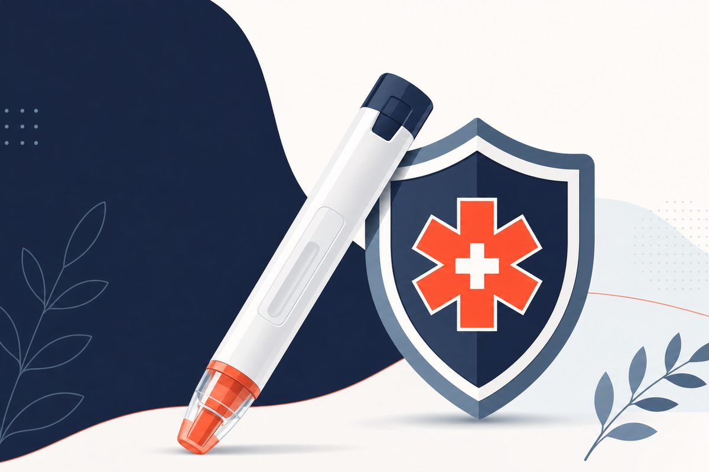

Key Takeaways
- Epinephrine is the first-line treatment for anaphylaxis. Antihistamines are not effective in treating anaphylaxis and should never be used in place of epinephrine.[2]
- On the FDA labels, the 0.3 mg auto-injector is for people 30 kg (66 lbs) or more and the 0.15 mg dose is for 15 to 30 kg (33 to 66 lbs); Auvi-Q also makes a 0.1 mg dose for 7.5 to 15 kg. Always carry two devices.[7][9]
- Give epinephrine at the first sign of suspected anaphylaxis, into the outer thigh, through clothing if necessary.[1][9]
- If symptoms continue or come back, use the second device. The Auvi-Q label allows a second dose starting 5 minutes after the first.[7][9]
- Get emergency medical help after using epinephrine. Symptoms can return hours later in a biphasic reaction.[4][9]
- Telehealth visits can be a convenient way to renew an existing epinephrine auto-injector prescription for adults with an established severe allergy.

Anaphylaxis can kill, even though an effective treatment exists. The danger grows when people hesitate, reach for an antihistamine instead of epinephrine, or wait to see whether symptoms pass on their own. U.S. death certificate data from 1999 to 2009 recorded about 186 to 225 anaphylaxis deaths per year.[3] The chance of dying from any single episode is very low,[3] but most reported deaths from anaphylaxis have been associated with delayed epinephrine.[2]
Every patient who carries an epinephrine auto-injector needs to hear this: the device only works if you use it, and use it early. In a national U.S. survey of people who reported a past anaphylactic reaction, only 11% said they self-administered epinephrine, while 27% self-treated with antihistamines.[6] Antihistamines are not effective in treating anaphylaxis and should never be used in place of epinephrine.[2]
This guide covers everything you need to know about epinephrine auto-injectors: which device to use, how to use it correctly, how to recognize anaphylaxis before it progresses, and when a telehealth visit is appropriate for getting or renewing your prescription.
Recognizing Anaphylaxis: What Happens and How Fast
Anaphylaxis is a serious allergic reaction that can become life-threatening, and it may progress rapidly, within minutes, from one severity grade to another.[1] Symptoms usually begin within minutes to 3 hours after exposure to a trigger.[2]
The 2023 practice parameter comes from the Joint Task Force for Practice Parameters, a partnership of the American Academy of Allergy, Asthma & Immunology (AAAAI) and the American College of Allergy, Asthma & Immunology (ACAAI).[8] It reviews two sets of diagnostic criteria. Under the widely used NIAID/FAAN criteria, anaphylaxis is highly likely when any one of three criteria is met.[1][2] The parameter also suggests that meeting diagnostic criteria is not required before using epinephrine.[1]
Scenario 1: Skin or mucous membrane symptoms (hives, itching, flushing, swollen lips or tongue) that come on within minutes to 3 hours, plus breathing symptoms or low blood pressure.[2]
Scenario 2: Two or more of the following soon after likely exposure to an allergen (within minutes to 3 hours): skin or mucosal symptoms, breathing symptoms, low blood pressure, or gastrointestinal symptoms such as vomiting or crampy abdominal pain.[2]
Scenario 3: Low blood pressure after exposure to an allergen known to affect that patient (within minutes to 3 hours).[2]
Symptoms by Organ System
Recognizing anaphylaxis means watching the whole body at once. Hives, flushing and swelling are familiar signs, but the 2023 parameter notes that anaphylaxis may occur without typical skin features.[1] The danger lies in what happens to the airway and circulation.
| Organ System | Common Symptoms |
|---|---|
| Skin & Mucous Membranes | Hives, itching, flushing, swelling (lips, tongue, face) |
| Respiratory | Throat tightening, hoarseness, stridor, wheezing, difficulty breathing |
| Cardiovascular | Rapid heart rate, low blood pressure, dizziness, chest pain, collapse |
| Gastrointestinal | Cramping, nausea, vomiting, diarrhea |
| Neurological | Anxiety, confusion, sense of impending doom |
This is one of the most dangerous misconceptions I encounter. Antihistamines are not effective in treating anaphylaxis and should never be used in place of epinephrine.[2] Patients, emergency responders and even emergency physicians do not always treat anaphylaxis with epinephrine, and use antihistamines or corticosteroids instead.[2] That delay is the problem: fatal anaphylaxis has been associated with delayed epinephrine.[2]
Biphasic Anaphylaxis: Why Emergency Care Matters
Biphasic anaphylaxis is a return of symptoms after the first reaction has resolved, without any new exposure to the trigger.[2] In a registry of anaphylaxis cases from 11 countries, 4.7% of reactions followed a biphasic course.[5] The 2023 parameter places the second phase within 1 to 48 hours after the first symptoms fully resolve,[1] and a review of the earlier 2020 parameter notes it may occur up to 72 hours later.[4]
In that registry, factors linked with a biphasic course included a more severe reaction, multiorgan involvement, peanut or tree nut as the trigger, an unknown trigger, exercise as a cofactor, more than 30 minutes between contact with the trigger and the first symptoms, and chronic urticaria (hives).[5] Even so, identifying who is at risk remains difficult.[5] That is one reason the EpiPen label tells patients to get emergency medical help right away after using it.[9]
Common Triggers for Anaphylaxis
Knowing your triggers is the first line of defense. In a national U.S. survey, the authors estimated that at least 1.6% of adults have had anaphylaxis, and probably more.[6] Among people who reported anaphylaxis in that survey, the most common triggers were medications (34%), foods (31%) and insect stings (20%).[6]
Food Triggers
Food is one of the leading triggers, and most people do not know they have a food allergy until their first reaction.[2] U.S. food law recognizes nine major food allergens: milk, eggs, fish, crustacean shellfish, tree nuts, peanuts, wheat, soybeans and sesame.[10] Peanuts and tree nuts carry particular risk: in the registry analysis, a peanut or tree nut trigger was linked with higher odds of a biphasic reaction.[5]
Insect Stings
Hymenoptera stings, from bees, wasps, hornets, yellow jackets and fire ants, are a common trigger.[6] Venom allergy is worth confirming formally with an allergist, who can discuss whether venom immunotherapy (allergy shots) is right for you. The 2023 parameter also suggests considering evaluation for mastocytosis, a mast cell disorder, in adults with severe insect sting anaphylaxis.[1]
Medications
Medications were the most commonly reported trigger in the national survey,[6] and drugs are the most common cause among adults seen in the emergency department for anaphylaxis.[2] Whether someone with a past drug reaction should carry an auto-injector is an individual decision: the 2023 parameter suggests routinely prescribing auto-injectors for people at higher risk of anaphylaxis and shared decision-making for those at lower risk.[1]
Exercise-Induced and Idiopathic Anaphylaxis
Exercise-induced anaphylaxis is a distinct condition in which physical exertion triggers a systemic reaction. Some patients have food-dependent exercise-induced anaphylaxis, where eating a specific food within a few hours before exercise is required to provoke a reaction. The food alone and the exercise alone are both tolerated, but the combination is not. This diagnosis is easy to miss if the pattern is not recognized.
Idiopathic anaphylaxis means no trigger is found after a thorough evaluation. In the registry analysis, an unknown trigger was linked with higher odds of a biphasic reaction,[5] and the 2023 parameter suggests considering evaluation for mastocytosis in adults with recurrent idiopathic anaphylaxis.[1] People with idiopathic anaphylaxis need close follow-up with an allergist.
Epinephrine Auto-Injector Devices: EpiPen, Auvi-Q, and Generics
Several epinephrine auto-injector (EAI) devices are sold in the United States, and the two brands described here are both injected into the outer thigh.[7][9] The 2023 parameter suggests choosing among them by dosage, needle length, affordability, access and patient preference.[1] What matters most is a device you can use correctly and consistently under stress.
| Device | Doses Available | Notable Features |
|---|---|---|
| EpiPen / EpiPen Jr | 0.3 mg (30 kg or more); EpiPen Jr 0.15 mg (15 to 30 kg) | Traditional pen-shaped device. The orange end is the needle end; the blue safety release is on top. Hold in place for at least 3 seconds.[9] |
| Auvi-Q | 0.1 mg (7.5 to under 15 kg), 0.15 mg (15 to under 30 kg), 0.3 mg (30 kg or more) | Electronic voice instructions, beeps and LED light cues guide each step, with a 2-second countdown after activation. The needle retracts automatically after the injection.[7] |
| Other epinephrine auto-injectors | Varies by product; check the label | Other devices are available. Technique differs between devices, and pharmacies may substitute one device for another, so review how to use the device you are given whenever it changes.[2] |
The 2023 AAAAI/ACAAI practice parameter suggests routinely prescribing EAIs to patients at higher risk of anaphylaxis and using shared decision-making for lower-risk patients.[1] When choosing between one and multiple devices, it suggests clinicians consider a patient's risk factors for severe anaphylaxis, their values and preferences, and contextual factors.[1] In practice, two devices are the norm: the EpiPen 2-Pak contains two auto-injectors, and the EpiPen label tells patients to always carry two.[9]
Dosing: Getting the Right Strength for Your Weight
Epinephrine dosing for anaphylaxis is weight-based. The 2023 AAAAI/ACAAI practice parameter recommends 0.01 mg/kg, up to a maximum of 0.3 mg for children and teenagers and 0.5 mg for adults.[1] Auto-injectors come in fixed doses, so the FDA-labeled weight bands below guide which device to prescribe.[7][9]
| Patient Weight | Recommended Dose | Device Options |
|---|---|---|
| 7.5 to under 15 kg (16.5 to 33 lbs) | 0.1 mg | Auvi-Q 0.1 mg[7] |
| 15 to 30 kg (33 to 66 lbs) | 0.15 mg | EpiPen Jr, Auvi-Q 0.15 mg[7][9] |
| 30 kg or more (66 lbs and above) | 0.3 mg | EpiPen, Auvi-Q 0.3 mg[7][9] |
Expert consensus suggests switching most children from the 0.15 mg to the 0.3 mg dose when they reach 25 kg, rather than waiting for 30 kg.[2] The 2023 parameter also notes support for switching at 25 kg to limit underdosing in children nearing 30 kg.[1] Discuss this with your child's physician at each annual review; dose reassessment should accompany every weight check.
Neither the EpiPen nor the Auvi-Q label covers infants under 7.5 kg; the Auvi-Q 0.1 mg device is labeled from 7.5 kg (16.5 pounds).[7][9] For infants and toddlers under 15 kg, the 2023 parameter suggests either the 0.1 mg or the 0.15 mg auto-injector.[1] If your infant is at risk of anaphylaxis, and especially if your infant weighs less than 7.5 kg, speak directly with a pediatric allergist about your options.
How to Use an Epinephrine Auto-Injector: Step-by-Step
Correct technique matters. Lack of training in correct technique is a recognized barrier to proper epinephrine use, and intramuscular epinephrine in the outer (anterolateral) thigh achieves faster and higher peak blood levels than injection under the skin.[2] The outer thigh is the labeled injection site for both EpiPen and Auvi-Q.[7][9] Here is the general technique; always follow the instructions for your own device:
- Act at the first sign. Epinephrine should be given at the first sign or symptom of suspected anaphylaxis.[1] Have someone call 911 if they can.
- Remove the device from its carrying case. On EpiPen, keep the blue safety top in place until you are ready to inject.[9]
- Remove the safety cap (blue safety release on EpiPen; red safety guard on Auvi-Q). Never put your thumb, fingers or hand over the needle end.[7][9]
- Place the tip against the outer thigh, through clothing if necessary. Do not inject into a vein, the buttock, fingers, hands or feet.[7][9]
- Push firmly. EpiPen is given by swinging and pushing the auto-injector firmly against the outer thigh; Auvi-Q is pushed firmly until you hear a click and hiss.[7][9]
- Hold in place for at least 3 full seconds (EpiPen) or 2 seconds (Auvi-Q, which counts down for you).[7][9] EpiPen instructions were changed from a 10-second hold to 3 seconds to reduce injuries when children move their legs.[2]
- Remove the device by lifting it straight out from the thigh. For a young child, hold the leg firmly in place and limit movement before and during the injection.[9]
- Note the time of injection. If symptoms continue or come back, use the second auto-injector. The Auvi-Q label allows a second dose starting 5 minutes after the first.[7][9]
- Get emergency medical help right away, even if you feel better.[9]
You do not need to remove clothing or prepare the skin before injecting. Both the EpiPen and Auvi-Q labels direct injection into the outer thigh through clothing if necessary.[7][9] In an emergency, removing layers of clothing wastes time that matters.
When to Use a Second Dose
The EpiPen 2-Pak contains two auto-injectors, and the Auvi-Q label recommends that patients be prescribed and have immediate access to two devices at all times.[7][9] The EpiPen label says you can use a second auto-injector if symptoms continue or come back, and the Auvi-Q label allows a second dose starting 5 minutes after the first.[7][9]
The 2023 parameter suggests routinely prescribing more than one auto-injector for patients who have previously needed multiple doses of epinephrine to treat an episode, or who have had a biphasic reaction.[1] If that describes your history, ask your physician how many devices you should carry and whether your action plan should be updated.
More than two doses in a row should be given only under direct medical supervision.[9] Emergency medical services should be called if anaphylaxis is severe or does not resolve promptly.[1] Do not delay calling 911 because you are waiting to see whether a dose "kicks in."
Carrying Two Devices, Managing Expiration, and Cost
Always Carry Two
The EpiPen label tells patients to always carry two auto-injectors, and the Auvi-Q label recommends immediate access to two devices at all times.[7][9] The 2023 parameter adds that people who have needed multiple doses or had a biphasic reaction should routinely be prescribed more than one.[1] Anaphylaxis does not announce itself conveniently. Reactions happen at school, at work, at restaurants, on planes, and during exercise. A single device that is left at home, left in a hot car, or expired when you reach for it is a real and preventable risk.
Practical carrying strategies include: a dedicated insulated auto-injector case worn on the body, a second set kept at school or the workplace, and a device in every bag you regularly carry. Make it a habit: like a phone or wallet, it leaves with you every time.
Expiration and Inspection
Check the expiration date on your devices regularly and replace them before they expire.[9] Set a reminder well ahead of the date so you have time to get a refill. Between checks, look through the viewing window: use the medicine only if it is clear and colorless, and replace the device if the solution is pinkish, brown, cloudy or contains particles.[9]
The labels say to store auto-injectors at 20°C to 25°C (68°F to 77°F), with excursions to 15°C to 30°C (59°F to 86°F) permitted. Do not refrigerate, and keep the device in its case to protect it from light.[7][9] Do not leave it in a hot car. An insulated carrying case can help in hot weather.
Cost and Access
Cost is a real barrier. Epinephrine auto-injectors may be prohibitively expensive for patients without prescription coverage or with high-deductible plans, and although patient assistance programs exist, cost remains a significant concern for many patients.[2] Ask your physician or pharmacist about lower-cost auto-injector options, manufacturer coupons, and assistance programs before paying out of pocket for a brand-name device.
Your Anaphylaxis Action Plan
Every patient prescribed an epinephrine auto-injector should have a written anaphylaxis action plan: a single-page document that outlines their known triggers, symptom recognition criteria, when to use epinephrine, and what to do after injection. These are available from FARE (Food Allergy Research & Education) and AAFA (Asthma and Allergy Foundation of America) and should be customized by your physician to reflect your specific history.
School and Workplace Policies
Most people do not know they have a food allergy until their first reaction, and some reactions at school happen in children with no previously known food allergy.[2] Laws across the United States now allow schools to stock and use epinephrine auto-injectors on a voluntary basis.[2] Keep a written action plan on file with your child's school nurse.
For adults, consider telling your employer's occupational health or HR department about your condition so a colleague can help if needed, and ask whether your workplace keeps stock epinephrine.
Exercise-Induced Anaphylaxis: Special Considerations
If you have exercise-induced anaphylaxis or food-dependent exercise-induced anaphylaxis, your action plan needs to account for workout settings. Always exercise with a partner who knows your condition and knows where your auto-injectors are. Do not exercise alone in isolated areas. Your action plan should specify the foods to avoid before exercise and the minimum interval between eating and physical activity that your allergist recommends.
Telehealth's Role in Prescribing and Refilling Epinephrine Auto-Injectors
A telehealth visit can be an efficient way to renew an existing epinephrine auto-injector prescription for an adult with an established severe allergy. Many auto-injector prescriptions are renewals for patients with established food allergy, venom allergy, or prior anaphylaxis who need a new prescription before their current devices expire. A secure video visit allows a physician to review your allergy history, confirm that your current diagnosis and risk level still warrant an EAI, assess whether your prescribed dose remains appropriate (particularly in growing children), and send the prescription directly to your preferred pharmacy.
Telehealth is also valuable for the initial assessment of patients who suspect they have had an anaphylaxis-level reaction and want guidance on whether an EAI is appropriate for them. While a formal allergy evaluation, with skin prick testing and specific IgE measurement, is typically performed by an in-person allergist, the preliminary history and prescription can often be addressed in a telehealth setting while that referral is being arranged.
When should you see an allergist in person rather than managing this via telehealth alone? If you have never had a formal allergy evaluation, if your trigger is unknown (idiopathic anaphylaxis), if you have had multiple reactions despite carrying epinephrine, or if you are a candidate for venom immunotherapy, an in-person allergist visit is warranted. Telehealth and in-person allergy care work best as complements, not substitutes.
Call 678-956-1855 or email contact@teledirectmd.com to schedule a telehealth visit for epinephrine auto-injector prescription, renewal, or dose reassessment. Available across 40+ licensed U.S. states. No insurance required.
Why Should You Get Emergency Care After Using Epinephrine?
I hear patients say: "But I feel completely fine now. Do I really have to go?" In most cases, yes.
Epinephrine has a rapid onset and a short duration of action.[9] Published guidelines recommend assessment in an emergency department after epinephrine is used in the community, because symptoms may keep progressing and need more treatment, and because of the risk of a biphasic reaction.[2] Biphasic reactions occurred in 4.7% of cases in a large registry[5] and may occur up to 72 hours after the first reaction resolves.[4] Predicting who will have one is difficult.[5]
Emergency observation allows medical staff to monitor your vital signs and give more epinephrine or other treatment if needed. A summary of the 2020 practice parameter update notes that for patients with no severe risk factors, a 1-hour symptom-free observation period may be reasonable, while for patients at higher risk, such as those with severe anaphylaxis or who needed more than one dose of epinephrine, 6 hours or longer should be strongly considered.[4]
The 2023 parameter describes one exception: if epinephrine is used promptly, immediate activation of emergency medical services may not be required when the response is prompt, complete and durable, provided that additional epinephrine and medical care are readily available if needed.[1] Talk with your physician ahead of time about whether this applies to you, and write the decision into your action plan. If you are unsure, get evaluated.
Frequently Asked Questions
Yes. In the United States, epinephrine auto-injectors, including EpiPen, Auvi-Q and other versions, require a prescription. A clinician reviews your history of allergic reactions and your risk to decide whether you should carry one and in what dose. For adults with an established severe allergy, telehealth visits are one way to renew an existing prescription without visiting an in-person clinic.
Both deliver epinephrine into the outer thigh and are FDA-approved for the emergency treatment of allergic reactions, including anaphylaxis. EpiPen is a pen-shaped device in 0.3 mg and 0.15 mg (EpiPen Jr) doses and is held in place for 3 seconds. Auvi-Q comes in 0.3 mg, 0.15 mg and 0.1 mg doses, gives electronic voice instructions with light cues, is held for 2 seconds, and its needle retracts automatically. Both come in cartons of two devices. The choice comes down to personal preference, insurance coverage, and which device you can use most reliably under pressure.
Use the second auto-injector if your symptoms continue or come back after the first dose. The Auvi-Q label allows a second dose starting 5 minutes after the first. More than two doses in a row should be given only under direct medical supervision, so if symptoms are severe or not resolving, call 911 right away. Do not delay calling 911 while waiting to see if the second dose works.
Biphasic anaphylaxis is a real risk. Symptoms can return hours after they resolve, without any new exposure to the trigger. In a large registry, 4.7% of anaphylaxis cases were biphasic, and a review notes the return may occur up to 72 hours later. The EpiPen label tells patients to get emergency medical help right away after use. The 2023 practice parameter allows that immediate EMS activation may not be needed after a prompt, complete and durable response when more epinephrine and medical care are readily available; agree on this ahead of time with your physician.
No. Antihistamines are not effective in treating anaphylaxis and should never be used in place of epinephrine. Reaching for Benadryl first delays epinephrine, and fatal anaphylaxis has been associated with delayed epinephrine. Epinephrine is the first-line treatment. Antihistamines may be given after epinephrine for symptom comfort, but they do not replace it.
Check the expiration date printed on the device and its packaging, and replace the device before it expires. Look through the viewing window: use the medicine only if it is clear and colorless, and replace the device if the solution is pinkish, brown, cloudy or contains particles. Set a reminder well before the expiration date so you have time to get a refill. Expired auto-injectors deliver a lower dose of epinephrine, but using one is better than giving no epinephrine at all if it is the only device you have; call 911 right away. Do not routinely carry expired devices.
Dosing is weight-based. On the FDA labels, children weighing 15 to 30 kg (33 to 66 lbs) receive the 0.15 mg auto-injector (EpiPen Jr or Auvi-Q 0.15 mg), and those weighing 30 kg or more receive the 0.3 mg dose. For young children from 7.5 kg up to 15 kg, Auvi-Q makes a 0.1 mg device. Expert consensus supports switching most children to the 0.3 mg dose at 25 kg. Your child's physician should reassess the prescribed dose at every annual visit, because the appropriate dose changes with weight.
Yes. In most U.S. states, a telehealth physician can evaluate your allergy history and prescribe or renew an epinephrine auto-injector prescription during a secure video visit. This is especially valuable for patients managing known food allergies, insect sting allergy, or idiopathic anaphylaxis who need prescription refills between in-person allergist appointments. TeleDirectMD is available for these visits across 40+ licensed U.S. states.
In a national U.S. survey of people who reported anaphylaxis, the most common triggers were medications (34%), foods (31%) and insect stings (20%). Among adults seen in emergency departments, drugs are the most common cause. Sometimes no trigger is found despite a thorough evaluation; this is called idiopathic anaphylaxis.
Store your auto-injector at 20°C to 25°C (68°F to 77°F); excursions to 15°C to 30°C (59°F to 86°F) are permitted. Do not refrigerate it, keep it in its case to protect it from light, and never leave it in a hot car. Carry it in an insulated case if you live in a hot climate or are traveling. Check the solution regularly through the viewing window; it should be clear and colorless.
How to cite this guide
Bhavsar P. Epinephrine Auto-Injector (EpiPen) Prescription & Usage Guide. TeleDirectMD Health Guides. Last reviewed March 2026. https://teledirectmd.com/health-guides/epinephrine-auto-injector-guide/
References
- Golden DBK, Wang J, Waserman S, et al. Anaphylaxis: A 2023 practice parameter update. Ann Allergy Asthma Immunol. 2024;132(2):124-176. Practice guideline. https://pubmed.ncbi.nlm.nih.gov/38108678/
- Prince BT, Mikhail I, Stukus DR. Underuse of epinephrine for the treatment of anaphylaxis: missed opportunities. J Asthma Allergy. 2018;11:143-151. Review. https://pmc.ncbi.nlm.nih.gov/articles/PMC6016581/
- Ma L, Danoff TM, Borish L. Case fatality and population mortality associated with anaphylaxis in the United States. J Allergy Clin Immunol. 2014;133(4):1075-1083. https://pubmed.ncbi.nlm.nih.gov/24332862/
- Weller KN, Hsieh FH. Anaphylaxis: Highlights from the practice parameter update. Cleve Clin J Med. 2022;89(2):106-111. https://www.ccjm.org/content/89/2/106
- Kraft M, Scherer Hofmeier K, Ruëff F, et al. Risk factors and characteristics of biphasic anaphylaxis. J Allergy Clin Immunol Pract. 2020;8(10):3388-3395.e6. https://pubmed.ncbi.nlm.nih.gov/32763470/
- Wood RA, Camargo CA, Lieberman P, et al. Anaphylaxis in America: the prevalence and characteristics of anaphylaxis in the United States. J Allergy Clin Immunol. 2014;133(2):461-467. https://pubmed.ncbi.nlm.nih.gov/24144575/
- kaleo, Inc. AUVI-Q (epinephrine injection, USP) auto-injector: prescribing information. DailyMed, updated October 2, 2025 (label revised 4/2025). Accessed November 15, 2026. https://dailymed.nlm.nih.gov/dailymed/drugInfo.cfm?setid=6180fb40-7fca-4602-b3da-ce62b8cd2470
- American College of Allergy, Asthma & Immunology (ACAAI). New Guidelines Released for Practitioners Treating Anaphylaxis and Atopic Dermatitis. News release, December 19, 2023. https://acaai.org/news/new-guidelines-released-for-practitioners-treating-anaphylaxis-and-atopic-dermatitis/
- Viatris Specialty LLC. EpiPen and EpiPen Jr (epinephrine injection) auto-injector: prescribing information. DailyMed, updated February 15, 2023 (label revised 02/2023). Accessed November 15, 2026. https://dailymed.nlm.nih.gov/dailymed/drugInfo.cfm?setid=7560c201-9246-487c-a13b-6295db04274a
- U.S. Food and Drug Administration. Food Allergies: What You Need to Know. Content current as of August 16, 2024. Accessed November 15, 2026. https://www.fda.gov/food/buy-store-serve-safe-food/food-allergies-what-you-need-know